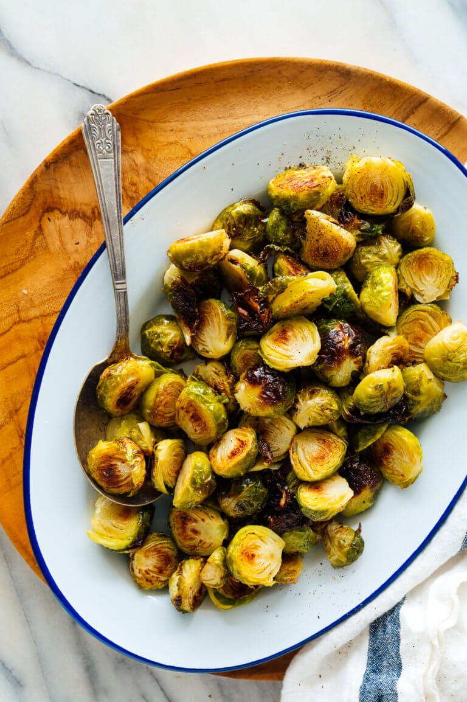

Roasted Brussels Sprouts

Deliciously Roasted Brussels Sprouts
These brussels sprouts are quick, easy, and a healthy side to add to any dish! The best roasted Brussels sprouts are crisp and golden on the outside, while tender on the inside. The flavors are both sweet and nutty.
The best part is is that these are super easy to make!
Ingredients
- 1 1/2 pounds of Brussels sprouts
- 2 tablespoons extra-virgin olive oil
- 1/4 teaspoon fine sea salt
Instructions
- Preheat the oven to 425 degrees Fahrenheit. If desired, line a large, rimmed baking sheet with parchment paper for easy cleanup.
- To prepare your Brussels sprouts, slice off the nubby ends and remove any discolored or damaged leaves. Cut each sprout in half from the flat base through the top.
- On your baking sheet, combine the halved sprouts, olive oil and salt. Toss until the sprouts are lightly and evenly coated. Arrange the sprouts in an even layer with their flat sides facing down.
- Roast the sprouts until they are tender and deeply golden on the edges, about 17 to 25 minutes. Garnish if desired (see ideas below). Roasted Brussels are best served warm, but they are also good at room temperature. Leftovers will keep for up to 4 days in the refrigerator.